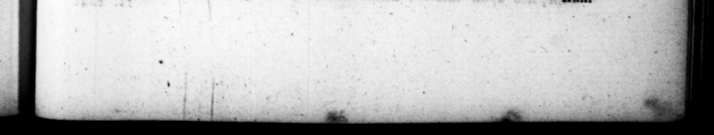

T. NL. 5 wang * nihil prius aut acrius monuit, un ne quid —— lictas bi heredjcares ab its, * Uderi erant, non rece- 5 F legacy e Tor, eo X4*-4 ramento Ruſoit- Cepionis, | had ordered his heit to make a preſene Fr caverate ur quatt in- yearly fo every ſenator upon thefe ibus curi am — ut, certam ſummam im prefiaree” bert, | ſues, irritum feett,” Rees qui ante aun. quennium proximum apud ærarium pependiſſent, uni. 2 — . liberavit : repeti, niſt intra annum, eaque condition permiſir, ut ecretarys 92 jth accifatort,yni cauſam non nh — n teneret, nn pena eſſet. un contrary $04 He — Scribas Qteſtorios negotian - doned for their paſt behaviour. | res ex conſheratine; 2 05 of land 3 tra Clod nia in upon tition made jams dien. — . 5 ters, xd amy 2 2 Va, que v effars as theirs. by preſcrs „qu diviſis pe eteranos pL 25 by s 2 2 agris* cutptim luperfuerunt, * veterihas oſſeſToribisy ut uſu- * in t 2 capta 8 Fiſcales' ca- Niſhing the — ; Y and the Hh lumnias magma calumnianti- his was much taten nice « Toe A prince who does not puni um pocena reproſſit: ferebacurque vox ejuis, Princeps- yur 3% make a F of informng,en : delatores min caſtie at, irrifat. W 84 0 2 10. Sed ne wn dlementize +: 10. But * 8 lg i. neque in alſſtinentiæ tenore * courſe f Clemency and Fuftice, yet permanfit : & ramen: s be ſooner fell away Fo the packe, of ro celerius aq ſ&Vitiam deſoi · ws than a varice. He put to death vit quam ad eupiditatem. 4 A ſeipi of FP, the Puntomimieł, Diſcipntum Paridis panromi- the 2 minor, and then ſich, only * mi puberem adhuc & cum ” caſe in the pradice of bis art and permaxime ægrum, quod arte for- .." ſom. both he reſembled his maſter >" as he maque non abfim.lis magiſtro 4%d /ikewiſe Hermogenes Fg or pt * 11 videbatur, occidit. Item ter- ſome ſly reflect ions Ty his | moon Tarſenſem, propter Hing moreover. the ſtriles 2 1 qualdam in hiſtoria figuras, it aur. One that w. maſter of 4 fs librariis etiam — eum de- 0 happening to 2 That a Thrax ſcripſerant crucifixis. Patrem Was a match -zor a Mirmillo, but not familias quod Tbrecem mirmii- ſi for”. he exbibiter of che games, ow arem, , munerarioimpa- he bad bim dragged. out x hls ſeat in. ixerat, detractum e ſpe- to the theater, and expoſed 0 the "Qacalls in arenam, Ccinibus' with thus label upon him, A Parmufaobjecit, cum hoc cen : rlan guilt talking impiouſiy. LMFPIE LOCU*" US He put to death a great many ſenatirs, PAR MULE AR IUS.” Com- © and them [ſeveral conſu —_— plures Senatores, 1 in his aliquot tlemen, ary: Cryica Cerea/u when conſulates, interemit: ex qui- was procomſia of Africa, — bus Civicam Cerealem in ipſu Oyſtus, au Acilins Glabrio in exile, unAfiz Proconſulatu, W 4 pretence of their deſigning an infer. * Es SE
